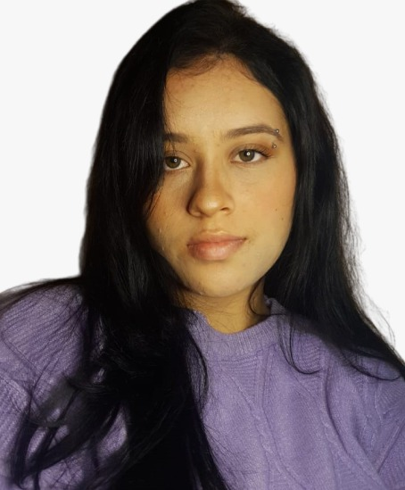

Minha trajetória no mundo da tecnologia começou na infância, quando sempre fui uma pessoa extremamente curiosa. Desde cedo, adorava explorar como as coisas funcionavam e mergulhei no mundo da programação quando tive meu primeiro contato com a tecnologia através de um curso no Code.org, onde conquistei meu primeiro certificado ainda criança. Essa curiosidade natural me acompanhou ao longo dos anos, moldando meu desejo de desvendar problemas e encontrar soluções inovadoras. Hoje, sou uma Desenvolvedora Fullstack com foco em Back-end, explorando linguagens e ferramentas como Node.js, Java, MongoDB e MySQL. Estou em constante aprendizado, atualmente aprimorando minhas habilidades com Java no curso de Pessoa Desenvolvedora Java Fullstack pela Generation, onde estou me preparando para enfrentar novos desafios e crescer ainda mais na área.
Sobre Daffne Vieira
